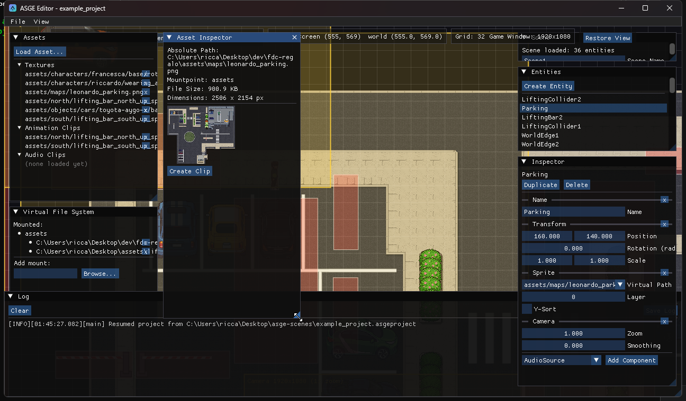

Import and inspect assets
Assets are addressed by virtual path everywhere in ASGE. The editor gives you a panel for the mounts that back those paths and one for browsing what they resolve to.

Steps
- In the Virtual File System panel, add a mount (a virtual root pointing at a real directory) with the native folder picker.
- In the Assets panel, use Load Asset... to bring in a texture, animation clip, audio clip or
.ttffont. The panel lists everything the editor knows about: assets some entity references, plus those you loaded explicitly (so an unused import still shows up). - Click an entry to open the Asset Inspector: absolute path, mountpoint and file size, plus a preview for the kind.
| Kind | Preview |
|---|---|
| Texture | Pixel dimensions and a scaled thumbnail. |
| Audio clip | Duration, size, and working Play/Pause and Rewind controls. |
| Animation clip | Every FrameTable field plus a live, cycling preview of its sliced frames. |
| Font | A sample string rendered with the font's own glyph metrics. Fonts feed a label's Font Path; changing a label's font size re-bakes it. |
Next: Animate a sprite turns a spritesheet texture into a playable clip.